Which National Park derives its name from the abundance of Red Silk Cotton Trees?
- (a) Keoladeo
- (b) Simlipal
- (c) Sunderban
- (d) Kaziranga
Topic: Biology Metodi: Physical Modeling Competenze: Physical Reasoning Objects: — Fonte: Testo (PDF) — p.3 Soluzione: Soluzioni (PDF)
Quale parco nazionale prende il nome dall’abbondanza di alberi di cotone di seta rossa?
- a) Keoladeo
- b) Simlipal
- c) Sunderban
- (d) Kaziranga
Topic: Biology Metodi: Physical Modeling Competenze: Physical Reasoning Objects: — Fonte: Testo (PDF) — p.3 Soluzione: Soluzioni (PDF)
Some algae live as endophytes in sea-weeds. Which of the following alga is endophytic to the aquatic fern, Azolla?
- (a) Sarcodia
- (b) Anabaena
- (c) Nostoc
- (d) Chondrus
Topic: Biology Metodi: Physical Modeling Competenze: Physical Reasoning Objects: — Fonte: Testo (PDF) — p.3 Soluzione: Soluzioni (PDF)
Alcune alghe vivono come endofiti nelle alghe marine. Quale delle seguenti alghe è endofetica al fern acquatico, Azolla?
- a) * Sarcodia*
- (b) Anabaena
- (c) Nostoc
- (d) Condrus
Topic: Biology Metodi: Physical Modeling Competenze: Physical Reasoning Objects: — Fonte: Testo (PDF) — p.3 Soluzione: Soluzioni (PDF)
St. Anthony’s Fire disease is caused by consumption of infected grains of rye. Which of the following is responsible for this disease?
- (a) Candida
- (b) Aspergillus
- (c) Russula
- (d) Claviceps
Topic: Biology Metodi: Physical Modeling Competenze: Physical Reasoning Objects: — Fonte: Testo (PDF) — p.3 Soluzione: Soluzioni (PDF)
St. La malattia di Anthony’s Fire è causata dal consumo di cereali infetti di sega. Quale delle seguenti cause di questa malattia?
- a) Candida
- b) Aspergillus
- (c) Russula
- (d) Claviceps
Topic: Biology Metodi: Physical Modeling Competenze: Physical Reasoning Objects: — Fonte: Testo (PDF) — p.3 Soluzione: Soluzioni (PDF)
Given below are two statements, one labeled as Assertion (A) and the other labeled as Reason (R). Choose the correct option from the codes given below.
Assertion (A): Each of the two strands of the original DNA molecule serves as a template for the synthesis of a new complementary strand. The result is two DNA molecules, each composed of one old (parental) strand and one new (daughter) strand.
Reason (R): During replication, the original DNA molecule is broken into fragments and each fragment is replicated. The newly synthesized DNA fragments and the original fragments are then interspersed, resulting in both strands of the daughter DNA containing a mix of old (parental) and new (daughter) DNA segments.
Code:
- (a) Both A and R are true and R is the correct explanation of A
- (b) Both A and R are true but R is not the correct explanation of A
- (c) A is true but R is false
- (d) R is true but A is false
Topic: Biology Metodi: Physical Modeling Competenze: Physical Reasoning Objects: — Fonte: Testo (PDF) — p.3 Soluzione: Soluzioni (PDF)
Di seguito sono riportate due affermazioni, una etichettata come affermazione (A) e l’altra come ragione (R). Scegliere l’opzione corretta dai codici riportati di seguito.
Asserzione (A): ciascuno dei due fili della molecola di DNA originale serve come modello per la sintesi di un nuovo filiere complementare. Il risultato è di due molecole di DNA, ciascuna composta da un vecchio filo (parentale) e da un nuovo filo (figlia).
Ragione (R): Durante la replicazione, la molecola originale del DNA viene spezzata in frammenti e ogni frammento viene replicato. I frammenti di DNA appena sintetizzati e i frammenti originali vengono poi interspersati, dando luogo a entrambe le fiamme del DNA della figlia contenenti un mix di vecchi (genitori) e nuovi (figlie) segmenti di DNA.
Codice:
- (a) Sia A che R sono vere e R è la corretta spiegazione di A
- b) Entrambe le A e R sono vere ma R non è la spiegazione corretta di A
- (c) A è vero ma R è falso
- (d) R è vero ma A è falso
Topic: Biology Metodi: Physical Modeling Competenze: Physical Reasoning Objects: — Fonte: Testo (PDF) — p.3 Soluzione: Soluzioni (PDF)
Who among the following is the launching leader of the Human Genome Project?
- (a) Alec Jeffreys
- (b) Francis Collins
- (c) Craig Venter
- (d) John Sulston and Bob Waterston
Topic: Biology Metodi: Physical Modeling Competenze: Physical Reasoning Objects: — Fonte: Testo (PDF) — p.3 Soluzione: Soluzioni (PDF)
Chi tra i seguenti è il leader del progetto del Genoma Umano?
- a) Alec Jeffreys
- b) Francis Collins
- c) Craig Venter
- (d) John Sulston e Bob Waterston
Topic: Biology Metodi: Physical Modeling Competenze: Physical Reasoning Objects: — Fonte: Testo (PDF) — p.3 Soluzione: Soluzioni (PDF)
Which of the following is often referred to as the Old Man of the Jungle?
- (a) Orangutan
- (b) Gibbon
- (c) Gorilla
- (d) Chimpanzee
Topic: Biology Metodi: Physical Modeling Competenze: Physical Reasoning Objects: — Fonte: Testo (PDF) — p.3 Soluzione: Soluzioni (PDF)
Quale di queste è spesso definito il vecchio della giungla?
- a) Orangutan
- b) Gibbon
- (c) Gorilla
- d) scimpanzé
Topic: Biology Metodi: Physical Modeling Competenze: Physical Reasoning Objects: — Fonte: Testo (PDF) — p.3 Soluzione: Soluzioni (PDF)
In the following experimental set-up, a twig of a succulent plant (Crassula) was inserted in the glass tube. The apparatus was kept in sun light for 6 hours. The inserted bubble will:
Quesito 7
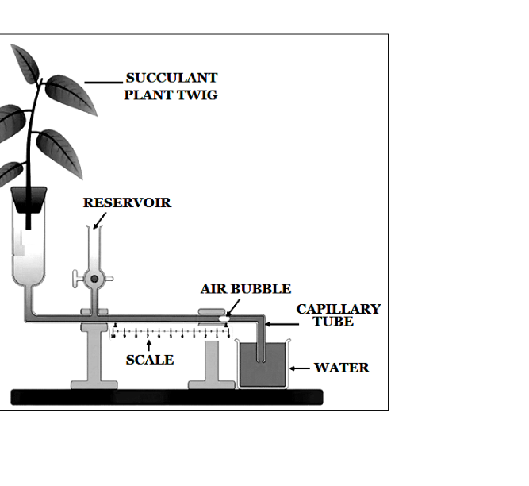
- (a) Move very fast to show high rate of transpiration.
- (b) Move slowly to show lower rate of transpiration.
- (c) Not move at all.
- (d) Move according to temperature of water.
Topic: Biology Metodi: Physical Modeling Competenze: Physical Reasoning Objects: Bubble Fonte: Testo (PDF) — p.3 Soluzione: Soluzioni (PDF)
Nel seguente setup sperimentale, un ramo di pianta succulenta (Crassula) è stato inserito nel tubo di vetro. L’apparecchio è stato tenuto sotto luce solare per 6 ore. La bolla inserita:
Quesito 7
- (a) Si muove molto velocemente per mostrare un alto tasso di traspirazione.
- (b) Si muova lentamente per mostrare un tasso di traspirazione inferiore.
- (c) Non si muove affatto.
- (d) Si muove in base alla temperatura dell’acqua.
Topic: Biology Metodi: Physical Modeling Competenze: Physical Reasoning Objects: Bubble Fonte: Testo (PDF) — p.3 Soluzione: Soluzioni (PDF)
Make the correct matches of the items M,N,O & P with (i) – (iv):
| [M] International Day of Forests | (i) 22, May |
| [N] International Day for Biological Diversity | (ii) 29, July |
| [O] World Nature Conservation Day | (iii) 21, March |
| [P] International Tiger Day | (iv) 28, July |
Choose the option showing correct matches:
- (a) M- (ii), N- (iii), O- (i), P- (iv)
- (b) M- (iv), N- (iii), O- (ii), P- (i)
- (c) M- (iii), N- (ii), O- (iv), P- (i)
- (d) M- (i), N- (iii), O- (ii), P- (iv)
Topic: Biology Metodi: Physical Modeling Competenze: Physical Reasoning Objects: — Fonte: Testo (PDF) — p.4 Soluzione: Soluzioni (PDF)
Fare le corrette corrispondenze delle voci M, N, O & P con (i) (iv):
| ♬ Giornata internazionale delle foreste ♬ 22 maggio ♬ | |
| ➡️Giorno internazionale della diversità biologica ➡️Il 29 luglio | |
| ♬ [O] Giornata Mondiale della Conservazione della Natura ♬ (III) 21 marzo ♬ | |
| [P] Giornata internazionale della tigre, 28 luglio |
Scegli l’opzione che mostra le corrette corrispondenze:
- a) M- (ii), N- (iii), O- (i), P- (iv)
- b) M- (iv), N- (iii), O- (ii), P- (i)
- c) M- (iii), N- (ii), O- (iv), P- (i)
- d) M- (i), N- (iii), O- (ii), P- (iv)
Topic: Biology Metodi: Physical Modeling Competenze: Physical Reasoning Objects: — Fonte: Testo (PDF) — p.4 Soluzione: Soluzioni (PDF)
Singly or in combination with other nucleotides, which of the following produce co-enzymes for oxidation-reduction reactions?
- (a) Vitamin B2 and B5
- (b) Vitamin B1 and B3
- (c) Vitamin B2 and B6
- (d) Vitamin B7 and B9
Topic: Biology Metodi: Physical Modeling Competenze: Physical Reasoning Objects: — Fonte: Testo (PDF) — p.4 Soluzione: Soluzioni (PDF)
Da singolo o in combinazione con altri nucleotidi, quale dei seguenti prodotti produce coenzimi per le reazioni di riduzione dell’ossidazione?
- a) Vitamine B2 e B5
- b) Vitamine B1 e B3
- (c) Vitamine B2 e B6
- d) Vitamine B7 e B9
Topic: Biology Metodi: Physical Modeling Competenze: Physical Reasoning Objects: — Fonte: Testo (PDF) — p.4 Soluzione: Soluzioni (PDF)
Match the characteristics (V–Z) listed in Column I with the Groups (i-v) listed under Column II:
| CHARACTERISTICS | GROUPS |
|---|---|
| (V) Presence of gelatinous mesoglea. | (i) Nematoda |
| (W) Presence of syncytial epidermis. | (ii) Platyhelminthes |
| (X) Presence of parapodia. | (iii) Cnidaria |
| (Y) Presence of parenchymatous tissue. | (iv) Mollusca |
| (Z) Presence of Radula. | (v) Annelida |
Choose the option showing the correct matches:
- (a) V-iii, W-i, X-v, Y-ii & Z-iv
- (b) V-iv, W-iii, X-ii, Y-i & Z-v
- (c) V-i, W-ii, X-iv, Y-v & Z-iii
- (d) V-iv, W-iv, X-iii, Y-ii & Z-i
Topic: Biology Metodi: Physical Modeling Competenze: Physical Reasoning Objects: — Fonte: Testo (PDF) — p.4 Soluzione: Soluzioni (PDF)
Concorre le caratteristiche (VZ) elencate nella colonna I con i gruppi (i-v) elencati nella colonna II:
Carattiristiche Gruppi |---|---| ∙ (V) Presenza di mesoglia gelatinosa. # # # Nematoda # Presenza di epidermi sinciti. # # (ii) # Platyhelminth # (X) Presenza di parapodia. # Cnidaria # Presenza di tessuto parenchimatoso. Che cosa fai? Presenza di Radula. # # Annelida #
Scegli l’opzione che mostra le corrette corrispondenze:
- a) V-III, W-I, X-V, Y-II e Z-iv
- b) V-iv, W-iii, X-ii, Y-i e Z-v
- (c) V-i, W-ii, X-iv, Y-v e Z-iii
- d) V-iv, W-iv, X-iii, Y-ii e Z-i
Topic: Biology Metodi: Physical Modeling Competenze: Physical Reasoning Objects: — Fonte: Testo (PDF) — p.4 Soluzione: Soluzioni (PDF)
In the animal Kingdom some examples of structures (internal or external) with similar name and function are found in distantly related animals. This is a fascinating example of convergent evolution. Choose the correct option exhibiting similarity by possessing an organ called ‘CROP’:
- (a) Taenia, Prawn and Toad
- (b) Earthworm, Nereis and Balanoglossus
- (c) Leech, Cockroach and Bird
- (d) Ascaris, Crab and Fish
Topic: Biology Metodi: Physical Modeling Competenze: Physical Reasoning Objects: — Fonte: Testo (PDF) — p.4 Soluzione: Soluzioni (PDF)
Nel Regno degli animali si trovano alcuni esempi di strutture (interne o esterne) con nome e funzione simili negli animali distanziamente correlati. Questo è un esempio affascinante di evoluzione convergente. Scegliere l’opzione corretta che mostri somiglianza possedendo un organo chiamato “CROP”:
- a) Taenia, ciambella e rospo
- b) Vermi terrestri, Nereis e Balanoglossus
- c) Leco, scarafaggio e uccello
- (d) Ascaris, granchio e pesce
Topic: Biology Metodi: Physical Modeling Competenze: Physical Reasoning Objects: — Fonte: Testo (PDF) — p.4 Soluzione: Soluzioni (PDF)
Identify the animals X and Y:
Quesito 12
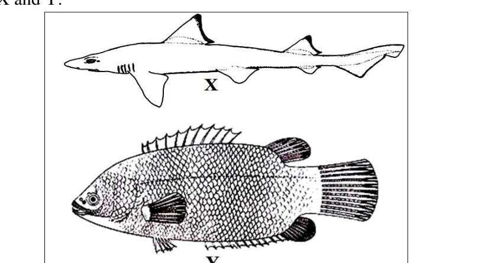
Choose the correct option showing their diagnostic characteristic of scales:
- (a) X-Ctenoid Scale; Y-Cycloid Scale
- (b) X-Placoid Scale; Y-Ctenoid Scale
- (c) X-Ganoid Scale; Y-Cosmoid Scale
- (d) X-Elasmoid Scale; Y-Placoid Scale
Topic: Biology Metodi: Physical Modeling Competenze: Physical Reasoning Objects: — Fonte: Testo (PDF) — p.4 Soluzione: Soluzioni (PDF)
Identificare gli animali X e Y:
Quesito 12
Scegliere l’opzione corretta che mostra la caratteristica diagnostica delle scale:
- a) Scala X-Ctenoide; Scala Y-Cicloide
- b) Scala X-Placoide; Scala Y-Ctenoide
- (c) Scala X-Ganoide; Scala Y-Cosmoide
- d) Scala X-Elasmoide; Scala Y-Placoide
Topic: Biology Metodi: Physical Modeling Competenze: Physical Reasoning Objects: — Fonte: Testo (PDF) — p.4 Soluzione: Soluzioni (PDF)
Which of the following is not only the most abundant biopolymer on earth but a Nitrogenous Polysaccharide, too?
- (a) Inulin
- (b) Hyaluronic Acid
- (c) Chitin
- (d) Trehalose
Topic: Biology Metodi: Physical Modeling Competenze: Physical Reasoning Objects: — Fonte: Testo (PDF) — p.5 Soluzione: Soluzioni (PDF)
Quale di queste è non solo il biopolimero più abbondante sulla terra ma anche un polisaccaride azoto?
- a) Inulina
- (b) Acido ialurono
- c) Chitin
- d) Trehalose
Topic: Biology Metodi: Physical Modeling Competenze: Physical Reasoning Objects: — Fonte: Testo (PDF) — p.5 Soluzione: Soluzioni (PDF)
The mathematical relationship called ‘Fibonacci Series’ is commonly observed in the arrangement of:
- (a) Stipules on twig
- (b) Leaves
- (c) Stamens
- (d) Flowers in an inflorescence
Topic: Biology Metodi: Physical Modeling Competenze: Physical Reasoning Objects: — Fonte: Testo (PDF) — p.5 Soluzione: Soluzioni (PDF)
La relazione matematica denominata “serie di Fibonacci” è comunemente osservata nell’arrangimento di:
- a) Stipoli su rami
- b) Fabbriche
- (c) Stamens
- (d) Fiori in inflorescenza
Topic: Biology Metodi: Physical Modeling Competenze: Physical Reasoning Objects: — Fonte: Testo (PDF) — p.5 Soluzione: Soluzioni (PDF)
Santalin, Red Brasilin and Haematoxylin dyes are naturally found in:
- (a) Alburnum
- (b) Rhytidome
- (c) Duramen
- (d) Phelloderm
Topic: Biology Metodi: Physical Modeling Competenze: Physical Reasoning Objects: — Fonte: Testo (PDF) — p.5 Soluzione: Soluzioni (PDF)
I coloranti Santalin, Brasilin rosso e Haematoxylin si trovano naturalmente in:
- a) Alburnum
- b) Ritidoma
- (c) Duramen
- d) Felloderm
Topic: Biology Metodi: Physical Modeling Competenze: Physical Reasoning Objects: — Fonte: Testo (PDF) — p.5 Soluzione: Soluzioni (PDF)
Although, profiles of different types of soil differ markedly with respect to their physico-chemical and biological properties; the following diagram shows a typical hypothetical soil profile with its 5 principal horizons [O to R].
Quesito 16
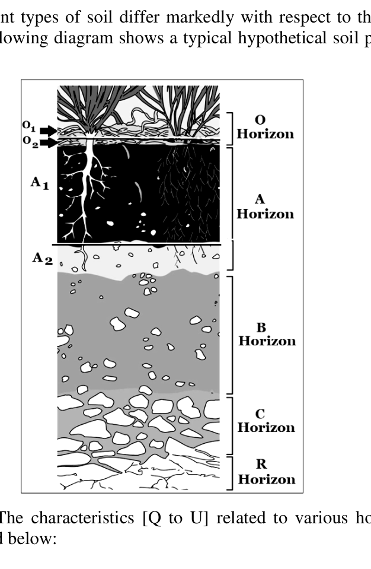
Study the given diagram. The characteristics [Q to U] related to various horizons and the names of horizons [i to v] are tabulated below:
| CHARACTERISTICS | HORIZONS |
|---|---|
| (Q) Solum | (i) O2 |
| (R) Podsolic Zone | (ii) A1 |
| (S) Fairly decomposed matter – “Duff” | (iii) A + B |
| (T) Melanized Region | (iv) A |
| (U) Zone of Eluviation | (v) A2 |
Make the correct matches of the characteristics [Q to U] with the horizons [i to v] and choose the correct option:
- (a) Q-i, R-iv, S- v, T-iii, U-ii
- (b) Q-v, R-iii, S-iv, T-iii, U-i
- (c) Q-iii, R-v, S- i, T-ii, U-iv
- (d) Q-ii, R-iv, S-iii, T-i, U-v
Topic: Earth & Environmental Science Metodi: Physical Modeling Competenze: Physical Reasoning Objects: — Fonte: Testo (PDF) — p.5 Soluzione: Soluzioni (PDF)
Anche se i profili di diversi tipi di suolo differiscono notevolmente per le loro proprietà fisico-chimiche e biologiche; il diagramma seguente mostra un tipico profilo ipotetico del suolo con i suoi 5 orizzonti principali [O a R].
Quesito 16
Studiate il diagramma. Le caratteristiche [Q a U] relative a vari orizzonti e i nomi degli orizzonti [i a v] sono riportati in tabella di seguito:
Caratteristiche ORIZIONI |---|---|
Solum # Solum # O2
R: Zona Podsolic # II: A1
(S) Materia abbastanza decomposta “Duff” (III) A + B
T. Regione Melanzata # IV. A.
Zona di Elevamento
Fare le corrette corrispondenze delle caratteristiche [Q a U] con gli orizzonti [i a v] e scegliere l’opzione corretta:
- a) Q-i, R-iv, S-v, T-iii, U-ii
- b) Q-v, R-iii, S-iv, T-iii, U-i
- (c) Q-iii, R-v, S-i, T-ii, U-iv
- (d) Q-ii, R-iv, S-iii, T-i, U-v
Topic: Earth & Environmental Science Metodi: Physical Modeling Competenze: Physical Reasoning Objects: — Fonte: Testo (PDF) — p.5 Soluzione: Soluzioni (PDF)
A mixture of hydrogen and chlorine kept in a closed flask at a constant temperature was irradiated with scattered light. After a certain time the chlorine content decreased by 20% compared with that of the starting mixture and the resulting mixture had the composition as follows: 60 volume % of chlorine, 10 volume % of hydrogen, and 30 volume % of hydrogen chloride. Determine the composition of the initial gaseous mixture
- (a) Cl₂ = 60 %, H₂ = 40 %
- (b) H₂ = 60 %, Cl₂ = 40 %
- (c) Cl₂ = 45 %, H₂ = 55 %
- (d) H₂ = 25 %, Cl₂ = 75 %
Topic: Chemistry Metodi: Conservation Laws, Physical Modeling Competenze: Mathematical Modeling Objects: — Fonte: Testo (PDF) — p.6 Soluzione: Soluzioni (PDF)
Una miscela di idrogeno e cloro conservata in un flacone chiuso a temperatura costante è stata irradiata con luce dispersa. Dopo un certo periodo il contenuto di cloro è diminuito del 20% rispetto a quello della miscela di partenza e la miscela risultante ha la seguente composizione: 60 vol % di cloro, 10 vol % di idrogeno e 30 vol % di cloruro di idrogeno. Determinare la composizione della miscela gassosa iniziale
- a) Cl2 = 60% e H2 = 40%
- b) H2 = 60%, Cl2 = 40%.
- c) Cl2 = 45%, H2 = 55%
- h) H2 = 25%, Cl2 = 75 %
Topic: Chemistry Metodi: Conservation Laws, Physical Modeling Competenze: Mathematical Modeling Objects: — Fonte: Testo (PDF) — p.6 Soluzione: Soluzioni (PDF)
A research scholar requires 50 mL aqueous NaNO₂ solution containing 70.0 mg Na⁺ per mL. The amount of NaNO₂ required is
- (a) 0.350 g
- (b) 0.161 g
- (c) 29.75 g
- (d) 12.93 g
Topic: Chemistry Metodi: Physical Modeling Competenze: Unit Conversion Objects: — Fonte: Testo (PDF) — p.6 Soluzione: Soluzioni (PDF)
Un ricercatore richiede 50 ml di soluzione acquosa di NaNO2 contenente 70,0 mg di Na+ per ml. La quantità di NaNO2 richiesta è
- (a) 0.350 g
- (b) 0.161 g
- (c) 29.75 g
- (d) 12.93 g
Topic: Chemistry Metodi: Physical Modeling Competenze: Unit Conversion Objects: — Fonte: Testo (PDF) — p.6 Soluzione: Soluzioni (PDF)
A sample of crystalline soda (A) with a mass of 1,287 g was allowed to react with an excess of hydrochloric acid and 100.8 mL of a gas was liberated (measured at STP). How many molecules of water in relation to one molecule of Na₂CO₃ are contained in the sample of soda? (Relative atomic masses are: Na = 23; H = 1; C = 12; O = 16)
- (a) 5
- (b) 6
- (c) 4
- (d) 10
Topic: Chemistry Metodi: Physical Modeling Competenze: Mathematical Modeling Objects: — Fonte: Testo (PDF) — p.6 Soluzione: Soluzioni (PDF)
Un campione di soda cristallina (A) di massa di 1 287 g è stato autorizzato a reagire con un eccesso di acido cloridrico e è stato rilasciato 100,8 ml di gas (misurato a STP). Quante molecole di acqua rispetto a una molecola di Na2CO3 sono contenute nel campione di soda? (Le masse atomiche relative sono: Na = 23; H = 1; C = 12; O = 16)
- (a) 5
- (b) 6
- (c) 4
- (d) 10
Topic: Chemistry Metodi: Physical Modeling Competenze: Mathematical Modeling Objects: — Fonte: Testo (PDF) — p.6 Soluzione: Soluzioni (PDF)
Which of the following ammonium salt, release SO₃ gas on thermal decomposition?
(I)
(II)
- (a) I only
- (b) II only
- (c) Both (I) and (II)
- (d) None of these
Topic: Chemistry Metodi: Physical Modeling Competenze: Physical Reasoning Objects: — Fonte: Testo (PDF) — p.6 Soluzione: Soluzioni (PDF)
Quale dei seguenti sali di ammonio rilascia gas SO3 alla decomposizione termica?
(I)
(II)
- a) solo
- b) Solo II
- c) Entrambe le parti I e II
- (d) Nessuna di queste
Topic: Chemistry Metodi: Physical Modeling Competenze: Physical Reasoning Objects: — Fonte: Testo (PDF) — p.6 Soluzione: Soluzioni (PDF)
Which of the following group contains solid compounds at 10°C?
- (a) H₂O, NH₃, CH₄
- (b) F₂, Cl₂, Br₂
- (c) SO₃, I₂, NaCl
- (d) S₈, S₆, CH₃COCH₃
Topic: Chemistry Metodi: Physical Modeling Competenze: Physical Reasoning Objects: — Fonte: Testo (PDF) — p.6 Soluzione: Soluzioni (PDF)
Quale dei seguenti gruppi contiene composti solidi a 10°C?
- a) H2O, NH3, CH4
- b) F2, Cl2, Br2
- (c) SO3, I2, NaCl
- d) S8, S6, CH3COCH3
Topic: Chemistry Metodi: Physical Modeling Competenze: Physical Reasoning Objects: — Fonte: Testo (PDF) — p.6 Soluzione: Soluzioni (PDF)
How many 1°-amine are possible for C₃H₉N?
- (a) 6
- (b) 7
- (c) 8
- (d) 9
Topic: Organic Chemistry Metodi: Physical Modeling Competenze: Physical Reasoning Objects: — Fonte: Testo (PDF) — p.6 Soluzione: Soluzioni (PDF)
Quanti 1°-amine sono possibili per C3H9N?
- (a) 6
- (b) 7
- (c) 8
- (d) 9
Topic: Organic Chemistry Metodi: Physical Modeling Competenze: Physical Reasoning Objects: — Fonte: Testo (PDF) — p.6 Soluzione: Soluzioni (PDF)
For the compound given below, the correct increasing order of C–H bond strength is
Quesito 23
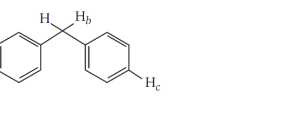
- (a) C–Hₐ > C–Hᵦ > C–H𝒸
- (b) C–Hₐ > C–H𝒸 > C–Hᵦ
- (c) C–H𝒸 > C–Hₐ > C–Hᵦ
- (d) C–H𝒸 > C–Hₐ > C–Hᵦ
Topic: Organic Chemistry Metodi: Physical Modeling Competenze: Physical Reasoning Objects: — Fonte: Testo (PDF) — p.6 Soluzione: Soluzioni (PDF)
Per il composto indicato di seguito, l’ordine corretto di aumento della forza del legame CH è
Quesito 23
- (a) C–Hₐ > C–Hᵦ > C–H𝒸
- (b) C–Hₐ > C–H𝒸 > C–Hᵦ
- (c) C–H𝒸 > C–Hₐ > C–Hᵦ
- (d) C–H𝒸 > C–Hₐ > C–Hᵦ
Topic: Organic Chemistry Metodi: Physical Modeling Competenze: Physical Reasoning Objects: — Fonte: Testo (PDF) — p.6 Soluzione: Soluzioni (PDF)
Consider the C–O bonds , and present in the compound given below
The increasing order of C–O bond length is
- (a)
- (b)
- (c)
- (d)
Topic: Organic Chemistry Metodi: Physical Modeling Competenze: Physical Reasoning Objects: — Fonte: Testo (PDF) — p.6 Soluzione: Soluzioni (PDF)
Considerare i legami CO , e presenti nel composto di seguito indicato
L’ordine crescente della lunghezza del legame CO è
- (a)
- (b)
- (c)
- (d)
Topic: Organic Chemistry Metodi: Physical Modeling Competenze: Physical Reasoning Objects: — Fonte: Testo (PDF) — p.6 Soluzione: Soluzioni (PDF)
The correct order of the bond energy of different C–H bonds in the given compound is
Quesito 25
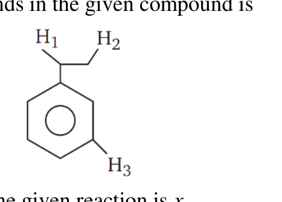
- (a) C–H₁ > C–H₂ > C–H₃
- (b) C–H₂ > C–H₁ > C–H₃
- (c) C–H₃ > C–H₂ > C–H₁
- (d) C–H₂ > C–H₃ > C–H₁
Topic: Organic Chemistry Metodi: Physical Modeling Competenze: Physical Reasoning Objects: — Fonte: Testo (PDF) — p.7 Soluzione: Soluzioni (PDF)
L’ordine corretto dell’energia di legame dei diversi legami CH nel composto dato è
Quesito 25
- (a) C–H₁ > C–H₂ > C–H₃
- (b) C–H₂ > C–H₁ > C–H₃
- (c) C–H₃ > C–H₂ > C–H₁
- (d) C–H₂ > C–H₃ > C–H₁
Topic: Organic Chemistry Metodi: Physical Modeling Competenze: Physical Reasoning Objects: — Fonte: Testo (PDF) — p.7 Soluzione: Soluzioni (PDF)
The total number of moles of NaHCO₃ consumed during the given reaction is .
Quesito 26
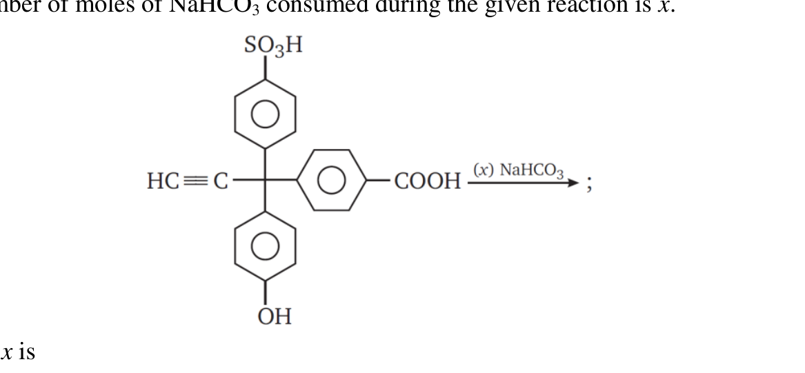
The value of is
- (a) 1
- (b) 2
- (c) 3
- (d) 4
Topic: Organic Chemistry Metodi: Physical Modeling Competenze: Physical Reasoning Objects: — Fonte: Testo (PDF) — p.7 Soluzione: Soluzioni (PDF)
Il numero totale di mole di NaHCO3 consumati durante la reazione data è .
Quesito 26
Il valore di è
- (a) 1
- (b) 2
- (c) 3
- (d) 4
Topic: Organic Chemistry Metodi: Physical Modeling Competenze: Physical Reasoning Objects: — Fonte: Testo (PDF) — p.7 Soluzione: Soluzioni (PDF)
If 1 mL of water contains 20 drops, the number of water molecules, in each drop of water, is (A is Avogadro number)
- (a)
- (b)
- (c)
- (d)
Topic: Chemistry Metodi: Order-of-Magnitude Estimation, Physical Modeling Competenze: Estimation & Approximation Objects: — Fonte: Testo (PDF) — p.7 Soluzione: Soluzioni (PDF)
Se 1 ml di acqua contiene 20 gocce, il numero di molecole di acqua, in ogni goccia di acqua, è (A è il numero di Avogadro)
- (a)
- (b)
- (c)
- (d)
Topic: Chemistry Metodi: Order-of-Magnitude Estimation, Physical Modeling Competenze: Estimation & Approximation Objects: — Fonte: Testo (PDF) — p.7 Soluzione: Soluzioni (PDF)
In which of the below given sets, all types of bonds (ionic, covalent and coordinate) are present in all the molecules?
- (a) HCN, HNO₃, O₃
- (b) KNO₃, HNO₃, CuSO₄ · 5H₂O
- (c) NH₄Cl, KNO₃, CuSO₄ · 5H₂O
- (d) Both (b) and (c)
Topic: Chemistry Metodi: Physical Modeling Competenze: Physical Reasoning Objects: — Fonte: Testo (PDF) — p.7 Soluzione: Soluzioni (PDF)
In quale dei seguenti gruppi tutti i tipi di legami (ionici, covalenti e coordinati) sono presenti in tutte le molecole?
- a) HCN, HNO3, O3
- b) KNO3, HNO3, CuSO4 · 5H2O
- (c) NH4Cl, KNO3, CuSO4 · 5H2O
- d) Entrambe le lettere b) e c)
Topic: Chemistry Metodi: Physical Modeling Competenze: Physical Reasoning Objects: — Fonte: Testo (PDF) — p.7 Soluzione: Soluzioni (PDF)
Which of the following C–H bonds have lowest bond dissociation energy?
- (a) 3° C–H bond
- (b) 2° C–H bond
- (c) 1° C–H bond
- (d) All have same bond dissociation energy
Topic: Organic Chemistry Metodi: Physical Modeling Competenze: Physical Reasoning Objects: — Fonte: Testo (PDF) — p.7 Soluzione: Soluzioni (PDF)
Quali dei seguenti legami CH hanno la più bassa energia di dissociazione dei legami?
- a) 3° obbligazione CH
- b) 2° obbligazione CH
- c) 1° obbligazione CH
- (d) Tutti hanno la stessa energia di dissociazione dei legami
Topic: Organic Chemistry Metodi: Physical Modeling Competenze: Physical Reasoning Objects: — Fonte: Testo (PDF) — p.7 Soluzione: Soluzioni (PDF)
The total number of lone pair of electron in is
- (a) 2
- (b) 3
- (c) 6
- (d) 9
Topic: Chemistry Metodi: Physical Modeling Competenze: Physical Reasoning Objects: — Fonte: Testo (PDF) — p.7 Soluzione: Soluzioni (PDF)
Il numero totale di coppie singole di elettroni in è
- (a) 2
- (b) 3
- (c) 6
- (d) 9
Topic: Chemistry Metodi: Physical Modeling Competenze: Physical Reasoning Objects: — Fonte: Testo (PDF) — p.7 Soluzione: Soluzioni (PDF)
The correct order of abstraction of hydrogen from the below given compound when treated with halogen is
Quesito 31
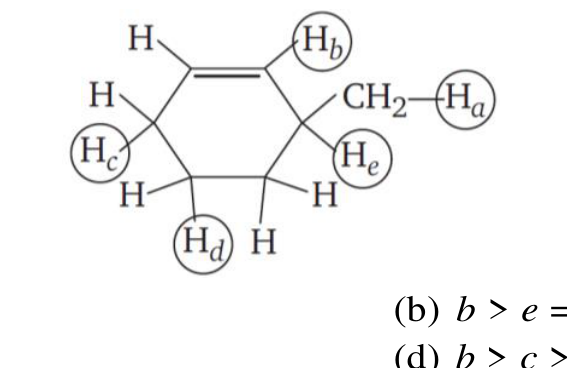
- (a)
- (b)
- (c)
- (d)
Topic: Organic Chemistry Metodi: Physical Modeling Competenze: Physical Reasoning Objects: — Fonte: Testo (PDF) — p.7 Soluzione: Soluzioni (PDF)
L’ordine corretto di astrazione dell’idrogeno dal composto indicato di seguito quando trattato con allogeno è
Quesito 31
- (a)
- (b)
- (c)
- (d)
Topic: Organic Chemistry Metodi: Physical Modeling Competenze: Physical Reasoning Objects: — Fonte: Testo (PDF) — p.7 Soluzione: Soluzioni (PDF)
Which of the following will form foam in water containing Ca²⁺ and Mg²⁺ ions?
- (a) Bu-stearate
- (b) Na-palmitate
- (c) Potassium n-dodecyl benzene sulphonate
- (d) All of these
Topic: Organic Chemistry Metodi: Physical Modeling Competenze: Physical Reasoning Objects: — Fonte: Testo (PDF) — p.8 Soluzione: Soluzioni (PDF)
Quale delle seguenti forme formerà schiuma in acqua contenente ioni Ca2+ e Mg2+?
- a) Bu-stearato
- b) Na-palmitato
- c) Sulfonato di benzeno n-dodecil-calio
- (d) Tutti questi
Topic: Organic Chemistry Metodi: Physical Modeling Competenze: Physical Reasoning Objects: — Fonte: Testo (PDF) — p.8 Soluzione: Soluzioni (PDF)
A student, intending to catch a bus on the bus stand, finds that the bus starts and accelerates away from him/her with uniform acceleration when he is 16 m far from the bus. He runs fast enough with a uniform speed so as just to catch the bus. The minimum speed with which the student must run, is
- (a)
- (b)
- (c)
- (d)
Topic: Newtonian Mechanics Metodi: Kinematic Equations Competenze: Mathematical Modeling Objects: — Fonte: Testo (PDF) — p.8 Soluzione: Soluzioni (PDF)
Uno studente che intende prendere un autobus sul punto di partenza del bus scopre che il bus parte e si allontana da lui con un’accelerazione uniforme quando è a 16 m di distanza dal bus. Corre abbastanza veloce con una velocità uniforme per prendere l’autobus. La velocità minima con cui lo studente deve correre è:
- (a)
- (b)
- (c)
- (d)
Topic: Newtonian Mechanics Metodi: Kinematic Equations Competenze: Mathematical Modeling Objects: — Fonte: Testo (PDF) — p.8 Soluzione: Soluzioni (PDF)
A block of mass 2.0 kg is suspended from the ceiling by a massless string. The string is taut bearing a definite tension when the block is stationary. Suddenly, the string breaks and the block starts falling freely. The difference in the tension in string just before and after it breaks is
- (a)
- (b)
- (c)
- (d) zero
Topic: Newtonian Mechanics Metodi: Free-Body Diagram Competenze: Physical Reasoning Objects: Block, String Fonte: Testo (PDF) — p.8 Soluzione: Soluzioni (PDF)
Un blocco di massa di 2,0 kg è sospeso dal soffitto da una corda senza massa. La corda è stretta e porta una certa tensione quando il blocco è stazionario. All’improvviso, la corda si rompe e il blocco inizia a cadere liberamente. La differenza tra la tensione della corda appena prima e dopo la rottura è
- (a)
- (b)
- (c)
- d) zero
Topic: Newtonian Mechanics Metodi: Free-Body Diagram Competenze: Physical Reasoning Objects: Block, String Fonte: Testo (PDF) — p.8 Soluzione: Soluzioni (PDF)
Having been paddled continuously on a horizontal road, the speed of a bicycle is increasing. The force of friction exerted by the ground on the wheels is
- (a) in the backward direction on both the wheels
- (b) in the forward direction on both the wheels
- (c) in the forward direction on the front wheel and in backward direction on the rear wheel
- (d) in the backward direction on the front wheel and in forward direction on the rear wheel
Topic: Newtonian Mechanics Metodi: Free-Body Diagram Competenze: Physical Reasoning Objects: Wheel Fonte: Testo (PDF) — p.8 Soluzione: Soluzioni (PDF)
Dopo essere stati remati continuamente su una strada orizzontale, la velocità della bicicletta aumenta. La forza di attrito esercitata dal terreno sulle ruote è
- a) in direzione anteriore su entrambe le ruote
- b) in direzione anteriore su entrambe le ruote
- c) in direzione anteriore sulla ruota anteriore e in direzione indietro sulla ruota posteriore
- d) in direzione anteriore sulla ruota anteriore e in direzione anteriore sulla ruota posteriore
Topic: Newtonian Mechanics Metodi: Free-Body Diagram Competenze: Physical Reasoning Objects: Wheel Fonte: Testo (PDF) — p.8 Soluzione: Soluzioni (PDF)
A current is established through the long straight conductors which are the arms of a hairpin-like structure placed in the plane of paper as shown in the figure. Knowing that a current carrying conductor produces magnetic field represented by the lines of force, analyse the situations described.
Quesito 36
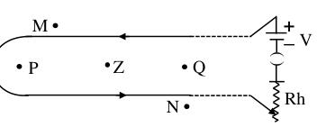
The correct option is
- (a) The magnetic field at point P is directed outward, normal to the plane of paper
- (b) The magnetic field at point Q is directed inward, normal to the plane of paper
- (c) The magnetic field at point Z is directed normal to the line PQ in the plane of paper
- (d) No magnetic field is produced outside the hair pin that is at points M & N
Topic: Magnetism Metodi: Biot-Savart Law Competenze: Diagrammatic Reasoning Objects: Wire Fonte: Testo (PDF) — p.8 Soluzione: Soluzioni (PDF)
Un corrente viene stabilita attraverso i lunghi conduttori dritti che sono le braccia di una struttura simile a una pinna di capelli collocata nel piano di carta come mostrato nella figura. Sapendo che un conduttore di corrente produce un campo magnetico rappresentato dalle linee di forza, analizzare le situazioni descritte.
Quesito 36
L’opzione corretta è:
- (a) Il campo magnetico del punto P è diretto verso l’esterno, normalmente verso il piano di carta
- b) Il campo magnetico del punto Q è rivolto verso l’interno, normale sul piano della carta
- (c) Il campo magnetico del punto Z è diretto normalmente alla linea PQ nel piano di carta
- (d) Non si produce alcun campo magnetico al di fuori della pinna di capelli che si trova nei punti M & N
Topic: Magnetism Metodi: Biot-Savart Law Competenze: Diagrammatic Reasoning Objects: Wire Fonte: Testo (PDF) — p.8 Soluzione: Soluzioni (PDF)
A certain water pump rated 500 W lifts water from ground level to a height at a rate of 240 kg/minute. Ignoring the kinetic energy gained by water, the efficiency of the water pump is
- (a) 74.8 %
- (b) 78.4 %
- (c) 84.7 %
- (d) 87.4 %
Topic: Conservation of Energy Metodi: Conservation of Energy Competenze: Mathematical Modeling Objects: — Fonte: Testo (PDF) — p.8 Soluzione: Soluzioni (PDF)
Una certa pompa d’acqua a 500 W solleva l’acqua dal livello del suolo ad un’altezza a una velocità di 240 kg/minuto. Ignorando l’energia cinetica ottenuta dall’acqua, l’efficienza della pompa d’acqua è
- (a) 74.8 %
- (b) 78.4 %
- (c) 84.7 %
- (d) 87.4 %
Topic: Conservation of Energy Metodi: Conservation of Energy Competenze: Mathematical Modeling Objects: — Fonte: Testo (PDF) — p.8 Soluzione: Soluzioni (PDF)
An electric kettle consists of two filaments and of different resistances and respectively, connected in parallel with separate switches. With a certain fixed amount of water in the kettle pot to prepare the tea, when only is switched on, it takes 4 minutes to boil the water. When and both are switched on simultaneously, it takes 3 minutes to boil the same amount of water up to the same temperature. The time taken to boil the same amount of water when only is switched on (assume that entire heat radiated by filaments is used in boiling the water starting from the same room temperature in each case) is
- (a) 7.0 min
- (b) 8.4 min
- (c) 9.6 min
- (d) 12.0 min
Topic: Circuits Metodi: Equivalent Circuit Reduction Competenze: Mathematical Modeling Objects: Resistor Fonte: Testo (PDF) — p.8 Soluzione: Soluzioni (PDF)
Un caldaio elettrico è costituito da due filamenti e di resistenze diverse e rispettivamente, collegati in parallelo con interruttori separati. Con una certa quantità fissa di acqua nel pozzetto per preparare il tè, quando è acceso solo , ci vogliono 4 minuti per bollire l’acqua. Quando e sono entrambi accesi contemporaneamente, occorrono 3 minuti per far bollire la stessa quantità di acqua alla stessa temperatura. Il tempo necessario per bollire la stessa quantità di acqua quando è acceso solo (presumendo che l’intero calore irradiato dai filamenti sia utilizzato per bollire l’acqua a partire dalla stessa temperatura ambiente in ogni caso) è
- a) 7,0 min
- b) 8,4 minuti
- c) 9,6 minuti
- d) 12,0 minuti
Topic: Circuits Metodi: Equivalent Circuit Reduction Competenze: Mathematical Modeling Objects: Resistor Fonte: Testo (PDF) — p.8 Soluzione: Soluzioni (PDF)
Two filament bulbs (100 W, 220 V) and (60 W, 220 V) are connected in series with a 440 V supply voltage source as shown. When switched on, the bulb
Quesito 39
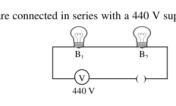
- (a) will fuse; will not fuse
- (b) will not fuse; will fuse
- (c) and both will fuse at the same instant
- (d) and both will not fuse
Topic: Circuits Metodi: Equivalent Circuit Reduction Competenze: Physical Reasoning Objects: Resistor Fonte: Testo (PDF) — p.9 Soluzione: Soluzioni (PDF)
Due lampadine a filamento (100 W, 220 V) e (60 W, 220 V) sono collegate in serie con una fonte di tensione di alimentazione da 440 V come mostrato. Quando viene acceso, l’ampolla
Quesito 39
- a) si fonderà; non si fonderà
- b) non si fonderà; si fonderà
- (c) e si fondono entrambi nello stesso istante
- (d) e non si fondono entrambe
Topic: Circuits Metodi: Equivalent Circuit Reduction Competenze: Physical Reasoning Objects: Resistor Fonte: Testo (PDF) — p.9 Soluzione: Soluzioni (PDF)
The volume of water spilled out of a completely filled cubic container of side 4 m when the container has been accelerated horizontally with is
- (a)
- (b)
- (c)
- (d)
Topic: Fluid Mechanics Metodi: Hydrostatic Equilibrium Competenze: Mathematical Modeling Objects: Container Fonte: Testo (PDF) — p.9 Soluzione: Soluzioni (PDF)
Il volume di acqua versata da un contenitore cubo completamente riempito di 4 m laterali quando il contenitore è stato accelerato orizzontalmente con è
- (a)
- (b)
- (c)
- (d)
Topic: Fluid Mechanics Metodi: Hydrostatic Equilibrium Competenze: Mathematical Modeling Objects: Container Fonte: Testo (PDF) — p.9 Soluzione: Soluzioni (PDF)
Two athletes, A and B, run in the ground on an oval track of length at and respectively in the same direction starting from same initial point. How many laps (rounds) will athlete A complete on the track before overtaking athlete B for the first time?
- (a) 2
- (b) 3
- (c) 4
- (d) 5
Topic: Newtonian Mechanics Metodi: Kinematic Equations Competenze: Mathematical Modeling Objects: — Fonte: Testo (PDF) — p.9 Soluzione: Soluzioni (PDF)
Due atleti, A e B, correre sul terreno su una pista ovale di lunghezza rispettivamente a e nella stessa direzione partendo dallo stesso punto iniziale. Quanti giri (rondate) completerà l’atleta A sulla pista prima di superare l’atleta B per la prima volta?
- (a) 2
- (b) 3
- (c) 4
- (d) 5
Topic: Newtonian Mechanics Metodi: Kinematic Equations Competenze: Mathematical Modeling Objects: — Fonte: Testo (PDF) — p.9 Soluzione: Soluzioni (PDF)
A wooden solid cylinder (density ), a plastic ball (density ) and a rubber cube (density ) all of equal mass float partly immersed in a trough containing water (density ) as shown below (ignore any tilt during floatation).
Quesito 42
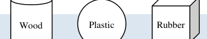
You may conclude that
- (a) The buoyant force is largest on the wooden cylinder
- (b) The buoyant force is largest on the plastic ball
- (c) The buoyant force is largest on the rubber cube
- (d) The buoyant force is equal on all the three
Topic: Fluid Mechanics Metodi: Hydrostatic Equilibrium Competenze: Physical Reasoning Objects: Cylinder, Ball, Container Fonte: Testo (PDF) — p.9 Soluzione: Soluzioni (PDF)
Un cilindro solido di legno (densità ), una palla di plastica (densità ) e un cubo di gomma (densità ) di massa uguale galleggiano in parte immersi in un pozzo contenente acqua (densità ) come mostrato di seguito (ignorare qualsiasi inclinazione durante la galleggiatura).
Quesito 42
Potreste concludere che
- (a) La forza di galleggiamento è maggiore sul cilindro in legno
- (b) La forza di galleggiamento è maggiore sulla palla di plastica
- (c) La forza di galleggiamento è maggiore sul cubo di gomma
- (d) La forza di galleggiamento è uguale su tutte e tre le
Topic: Fluid Mechanics Metodi: Hydrostatic Equilibrium Competenze: Physical Reasoning Objects: Cylinder, Ball, Container Fonte: Testo (PDF) — p.9 Soluzione: Soluzioni (PDF)
A stone is thrown vertically down into a well, the splash is heard after a time . If the stone is thrown vertically up with the same speed from the same point, the splash is heard after a time . The common initial speed of the stone in both the cases is given by (the time taken by the splash sound to reach the observer is ignored):
- (a)
- (b)
- (c)
- (d)
Topic: Newtonian Mechanics Metodi: Kinematic Equations Competenze: Mathematical Modeling Objects: — Fonte: Testo (PDF) — p.9 Soluzione: Soluzioni (PDF)
Una pietra viene gettata verticalmente in un pozzo, il colpo viene sentito dopo un tempo . Se la pietra viene lanciata verticalmente con la stessa velocità dallo stesso punto, il colpo viene sentito dopo un tempo . La velocità iniziale comune della pietra in entrambi i casi è data da (il tempo necessario per raggiungere l’osservatore è ignorato):
- (a)
- (b)
- (c)
- (d)
Topic: Newtonian Mechanics Metodi: Kinematic Equations Competenze: Mathematical Modeling Objects: — Fonte: Testo (PDF) — p.9 Soluzione: Soluzioni (PDF)
A beam of light is incident parallel to principal axis on a convex lens (L) of focal length . A plane mirror PQ, inclined at with the principal axis, is placed a distance behind the lens so as to form a real image I of the distant object at a distance from the optical center of the lens as shown in the figure. The value of is
Quesito 44
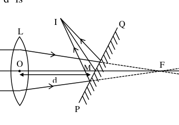
- (a) 5 cm
- (b) 10 cm
- (c) 15 cm
- (d) 20 cm
Topic: Geometric Optics Metodi: Thin Lens & Mirror Equation, Ray Tracing Competenze: Diagrammatic Reasoning Objects: Lens, Mirror Fonte: Testo (PDF) — p.9 Soluzione: Soluzioni (PDF)
Un fascio di luce è incidente parallelo all’asse principale su una lente convexa (L) di lunghezza focale . Un specchio piano PQ, inclinato a con l’asse principale, è posto a una distanza dietro la lente in modo da formare un’immagine reale I dell’oggetto lontano a una distanza dal centro ottico della lente come mostrato nella figura. Il valore di è
Quesito 44
- (a) 5 cm
- (b) 10 cm
- (c) 15 cm
- (d) 20 cm
Topic: Geometric Optics Metodi: Thin Lens & Mirror Equation, Ray Tracing Competenze: Diagrammatic Reasoning Objects: Lens, Mirror Fonte: Testo (PDF) — p.9 Soluzione: Soluzioni (PDF)
A 80 kg man skating with a speed of 10 m/s on a smooth horizontal surface collides with a 20 kg skater at rest, as a result the two cling to each other. What percentage of initial kinetic energy of skaters is lost during the collision? (Ignore any friction)
- (a) 12 %
- (b) 18 %
- (c) 20 %
- (d) 25 %
Topic: Conservation of Momentum Metodi: Conservation of Momentum, Conservation of Energy Competenze: Mathematical Modeling Objects: — Fonte: Testo (PDF) — p.10 Soluzione: Soluzioni (PDF)
Un pattinatore da 80 kg che fa un pattinaggio a velocità di 10 m/s su una superficie orizzontale liscia si schianta con un pattinatore da 20 kg in riposo, e i due si attaccano a vicenda. Quanta percentuale di energia cinetica iniziale dei pattinatori viene persa durante la collisione? (Ignorare qualsiasi attrito)
- (a) 12 %
- (b) 18 %
- (c) 20 %
- (d) 25 %
Topic: Conservation of Momentum Metodi: Conservation of Momentum, Conservation of Energy Competenze: Mathematical Modeling Objects: — Fonte: Testo (PDF) — p.10 Soluzione: Soluzioni (PDF)
Two cylindrical vessels and are placed on the same horizontal level. Each vessel contains the same liquid of density . Initially the vessels are not connected (valve closed). The height of liquid in vessel is and that in vessel is . The diameter of vessels and are and respectively. When vessels are interconnected (valve opened) at the bottom, the height of liquid in each vessel (neglecting the volume of liquid in connecting tube) will be
Quesito 46
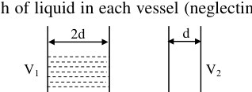
- (a)
- (b)
- (c)
- (d)
Topic: Fluid Mechanics Metodi: Hydrostatic Equilibrium Competenze: Mathematical Modeling Objects: Container, Tube Fonte: Testo (PDF) — p.10 Soluzione: Soluzioni (PDF)
Due recipienti cilindrici e sono posizionati sullo stesso piano orizzontale. Ogni recipiente contiene lo stesso liquido di densità . Inizialmente i recipienti non sono collegati (valvola chiusa). L’altezza del liquido nella nave è e quella nella nave è . Il diametro dei vasi e è rispettivamente e . Quando i vasi sono interconectati (aperte valvole) in fondo, l’altezza del liquido in ciascun recipiente (senza considerare il volume del liquido nel tubo di connessione) sarà di
Quesito 46
- (a)
- (b)
- (c)
- (d)
Topic: Fluid Mechanics Metodi: Hydrostatic Equilibrium Competenze: Mathematical Modeling Objects: Container, Tube Fonte: Testo (PDF) — p.10 Soluzione: Soluzioni (PDF)
Two vertical object pins are located on the principal axis of a thin lens at distances of and from the lens on the two sides of the lens. The images of the two pins formed by the lens are at the same position (overlap). The focal length and the nature of the lens are
- (a) 15 cm, convex
- (b) 12 cm, convex
- (c) 15 cm, concave
- (d) 12 cm, concave
Topic: Geometric Optics Metodi: Thin Lens & Mirror Equation Competenze: Mathematical Modeling Objects: Lens Fonte: Testo (PDF) — p.10 Soluzione: Soluzioni (PDF)
Due pin verticali sono posizionati sull’asse principale di una lente sottile a distanze di e dalla lente su entrambi i lati della lente. Le immagini dei due pin formati dalla lente sono nella stessa posizione (sovrapposizione). La distanza focale e la natura della lente sono
- a) 15 cm, convexa
- b) 12 cm, convexa
- 15 cm, concavi
- d) 12 cm, concavi
Topic: Geometric Optics Metodi: Thin Lens & Mirror Equation Competenze: Mathematical Modeling Objects: Lens Fonte: Testo (PDF) — p.10 Soluzione: Soluzioni (PDF)
A steam boat goes across a lake up to a distance of 1200 m and comes back. There is a uniform wind blowing with velocity so as to help the onward journey and to impede the journey back. If the uniform speed of the boat is and total time taken by the boat in going and coming back is 500 s, the velocity of the wind blow is
- (a)
- (b)
- (c)
- (d)
Topic: Newtonian Mechanics Metodi: Kinematic Equations Competenze: Mathematical Modeling Objects: — Fonte: Testo (PDF) — p.10 Soluzione: Soluzioni (PDF)
Una barca a vapore attraversa un lago fino a una distanza di 1200 m e torna. Viene un vento uniforme che soffia a velocità per aiutare il viaggio in avanti e impedire il viaggio di ritorno. Se la velocità uniforme della barca è e il tempo totale impiegato dalla barca in partenza e ritorno è di 500 s, la velocità del vento è
- (a)
- (b)
- (c)
- (d)
Topic: Newtonian Mechanics Metodi: Kinematic Equations Competenze: Mathematical Modeling Objects: — Fonte: Testo (PDF) — p.10 Soluzione: Soluzioni (PDF)
(Sezione A–2: una o più opzioni possono essere corrette.)
Fine structure of striated muscle fibres has been elucidated with the help of electron microscope. Study the following statements and choose the incorrect ones:
- (a) The dark and light bands of myofibrils have been respectively, named as ‘A’ [Anisotropic under polarized light] and ‘I’ [Isotropic under polarized light] bands.
- (b) The ‘A’ bands contain about 120Å thick and 18Å long actin filaments.
- (c) Each ‘I’ band is divided into two equal halves by a thin, fibrous and transverse zig-zag partition called ‘Z’ band.
- (d) The major middle lighter region of ‘A’ band is called ‘M’ zone
Topic: Biology Metodi: Physical Modeling Competenze: Physical Reasoning Objects: — Fonte: Testo (PDF) — p.11 Soluzione: Soluzioni (PDF)
*(Sezione A2: una o più opzioni possono essere corrette.) *
La struttura fine delle fibre muscolari striate è stata chiarita con l’aiuto del microscopio elettronico. Studiare le seguenti affermazioni e scegliere quelle incorrecte:
- (a) Le bande scure e chiare delle miofibrille sono state denominate rispettivamente come bande “A” [Anisotropo sotto luce polarizzata] e “I” [Isotropo sotto luce polarizzata].
- b) Le bande “A” contengono circa 120 e 18 anni di filamenti di actina.
- c) Ogni fascia “I” è divisa in due metà uguali da una divisione zigzag sottile, fibrosa e trasversale chiamata fascia “Z”.
- (d) La zona più grande di luce medio della banda “A” è chiamata zona “M”
Topic: Biology Metodi: Physical Modeling Competenze: Physical Reasoning Objects: — Fonte: Testo (PDF) — p.11 Soluzione: Soluzioni (PDF)
The autonomic nervous system is divided into two parts- [A] Sympathetic and [B] Parasympathetic. Some effects of these systems are given below, respectively. Choose the correct option(s)
- (a) Pupil constricts; Glycogen converted into glucose
- (b) Salivation decreases; Bladder constricts
- (c) Adrenaline released; Glucose converted into glycogen
- (d) Bronchii constrict; Gastric activity stimulated
Topic: Biology Metodi: Physical Modeling Competenze: Physical Reasoning Objects: — Fonte: Testo (PDF) — p.11 Soluzione: Soluzioni (PDF)
Il sistema nervoso autonomo è diviso in due parti: [A] simpattico e [B] parasimpatico. Alcuni effetti di questi sistemi sono indicati di seguito, rispettivamente. Scegliere l’opzione corretta
- a) Constrizioni pupiliche; Glicogeno convertito in glucosio
- b) Diminuisce la salivazione; restringimento della vescica
- (c) rilascio di adrenalina; glucosio convertito in glicogeno
- d) Restringimento del bronchio; stimolazione dell’attività gastrica
Topic: Biology Metodi: Physical Modeling Competenze: Physical Reasoning Objects: — Fonte: Testo (PDF) — p.11 Soluzione: Soluzioni (PDF)
Study the following statements regarding Haemophilia and choose the incorrect option(s):
- (a) It follows criss-cross pattern of inheritance
- (b) It is a Y-linked dominant trait
- (c) It is common in women but rare in man
- (d) It is also called royal disease
Topic: Biology Metodi: Physical Modeling Competenze: Physical Reasoning Objects: — Fonte: Testo (PDF) — p.11 Soluzione: Soluzioni (PDF)
Studiare le seguenti affermazioni relative all’emofilia e scegliere l’opzione sbagliata:
- a) Segue un modello di eredità incrociato
- (b) È un tratto dominante legato a Y
- (c) È comune nelle donne ma rara negli uomini
- (d) Si chiama anche malattia reale
Topic: Biology Metodi: Physical Modeling Competenze: Physical Reasoning Objects: — Fonte: Testo (PDF) — p.11 Soluzione: Soluzioni (PDF)
Which of the following trees does/do not show cheiropterophily?
- (a) Sausage tree
- (b) Kadamb
- (c) Coral tree
- (d) Silk Cotton
Topic: Biology Metodi: Physical Modeling Competenze: Physical Reasoning Objects: — Fonte: Testo (PDF) — p.11 Soluzione: Soluzioni (PDF)
Quale dei seguenti alberi mostra/non mostra la cheiropterophilia?
- (a) Albero di salsiccia
- b) Kadamb
- (c) Albero di corallo
- d) Cottone di seta
Topic: Biology Metodi: Physical Modeling Competenze: Physical Reasoning Objects: — Fonte: Testo (PDF) — p.11 Soluzione: Soluzioni (PDF)
The pair(s) of elements which has/have equal number of electrons in the outer most shell is/are
- (a) Na, Sr
- (b) Se, Te
- (c) Mn, Fe
- (d) As, Bi
Topic: Chemistry Metodi: Physical Modeling Competenze: Physical Reasoning Objects: — Fonte: Testo (PDF) — p.11 Soluzione: Soluzioni (PDF)
La coppia di elementi che ha/hanno uguale numero di elettroni nella più estera conchiglia è/sono
- (a) Na, Sr
- (b) Se, Te
- (c) Mn, Fe
- (d) As, Bi
Topic: Chemistry Metodi: Physical Modeling Competenze: Physical Reasoning Objects: — Fonte: Testo (PDF) — p.11 Soluzione: Soluzioni (PDF)
The correct statement(s) is/are
- (a) pH of NaOH is 8
- (b) pH of HCl is < 7
- (c) Aqueous solution of FeCl₃ is acidic
- (d) NaH₂PO₂ will react with NaOH to form Na₂HPO₂
Topic: Chemistry Metodi: Physical Modeling Competenze: Physical Reasoning Objects: — Fonte: Testo (PDF) — p.11 Soluzione: Soluzioni (PDF)
La corretta dichiarazione (s) è/sono
- a) Il pH di NaOH è di 8
- b) Il pH di HCl è < 7
- (c) La soluzione acquosa di FeCl3 è acida
- (d) NaH2PO2 reagirà con NaOH per formare Na2HPO2
Topic: Chemistry Metodi: Physical Modeling Competenze: Physical Reasoning Objects: — Fonte: Testo (PDF) — p.11 Soluzione: Soluzioni (PDF)
Considering the H-spectrum series, select the correctly matched pair(s)
- (a) Balmer:
- (b) Pfund:
- (c) Humphrey:
- (d) Paschen: IR region
Topic: Modern-Quantum Physics Metodi: Bohr Model & Quantization Competenze: Physical Reasoning Objects: Atom Fonte: Testo (PDF) — p.11 Soluzione: Soluzioni (PDF)
Considerando la serie dello spettro H, selezionare la coppia corretto
- a) Balmer:
- b) Fondi:
- (c) Humphrey:
- Paschen: regione dell’IR
Topic: Modern-Quantum Physics Metodi: Bohr Model & Quantization Competenze: Physical Reasoning Objects: Atom Fonte: Testo (PDF) — p.11 Soluzione: Soluzioni (PDF)
Which of the following acids are stronger than benzoic acid?
Quesito 56
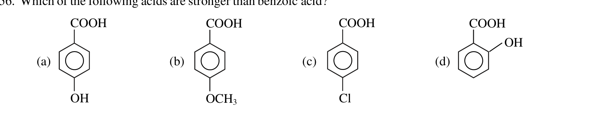
- (a) 4-hydroxybenzoic acid (–COOH with –OH in para)
- (b) 4-methoxybenzoic acid (–COOH with –OCH₃ in para)
- (c) 4-chlorobenzoic acid (–COOH with –Cl in para)
- (d) 2-hydroxybenzoic acid / salicylic acid (–COOH with –OH in ortho)
Topic: Organic Chemistry Metodi: Physical Modeling Competenze: Physical Reasoning Objects: — Fonte: Testo (PDF) — p.11 Soluzione: Soluzioni (PDF)
Quale degli acidi seguenti è più forte dell’acido benzoico?
Quesito 56
- a) Acido 4-idrossibenzoico (COOH con OH in * para*)
- b) Acido 4-metossibenzoico (COOH con OCH3 in * para*)
- (c) Acido 4-clorobenzoico (COOH con Cl in * para*)
- (d) Acido 2-idrossibenzoico/acido salicilico (COOH con OH in ortho)
Topic: Organic Chemistry Metodi: Physical Modeling Competenze: Physical Reasoning Objects: — Fonte: Testo (PDF) — p.11 Soluzione: Soluzioni (PDF)
A trolley of mass 240 kg is initially at rest on the frictionless horizontal straight rails lying in east-west direction. The length of the trolley is 20 m. A man of mass 60 kg is standing at the eastern end of the trolley. The man starts moving on the trolley from eastern end towards west with velocity relative to the trolley. Assume the displacement and the velocity in eastward direction to be positive. Choose the correct option.
- (a) The velocity of man relative to ground is
- (b) The recoil velocity of the trolley relative to ground is
- (c) The man reaches from one end of trolley to other end in time
- (d) Displacement of trolley over the ground when the man reaches the other end of trolley is
Topic: Conservation of Momentum Metodi: Conservation of Momentum Competenze: Mathematical Modeling Objects: Cart Fonte: Testo (PDF) — p.12 Soluzione: Soluzioni (PDF)
Un carrello di massa di 240 kg è inizialmente a riposo sulle rotaie orizzontali rette senza attrito che si trovano in direzione est-ovest. La lunghezza del carrello è di 20 metri. Un uomo di 60 kg sta in piedi all’estremità orientale del carrello. L’uomo inizia a muoversi sul carrello dall’est verso ovest con velocità rispetto al carrello. Supponiamo che il spostamento e la velocità in direzione est siano positivi. Scegli l’opzione giusta.
- (a) La velocità dell’uomo rispetto al suolo è
- b) La velocità di ritiro del carrello rispetto al terreno è
- (c) L’uomo raggiunge da un’estremità del carrello all’altra in tempo
- (d) Lo spostamento del carrello sul terreno quando l’uomo raggiunge l’altra estremità del carrello è
Topic: Conservation of Momentum Metodi: Conservation of Momentum Competenze: Mathematical Modeling Objects: Cart Fonte: Testo (PDF) — p.12 Soluzione: Soluzioni (PDF)
In an experiment performed using a cloud chamber (a device that can show the tracks of subatomic particles) the nature of a particle can be analysed. Under the influence of a strong perpendicular magnetic field directed into the plane of paper, a particle track like the one shown beside as was obtained. The track shown may depict
Quesito 58
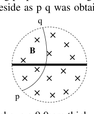
- (a) a proton (charge ) moving from point to
- (b) an alpha particle (charge ) moving from point to
- (c) an electron (charge ) moving from point to
- (d) a neutron (charge zero) moving from point to
Topic: Nuclear & Particle Physics Metodi: Lorentz Force Analysis Competenze: Diagrammatic Reasoning Objects: Point Charge Fonte: Testo (PDF) — p.12 Soluzione: Soluzioni (PDF)
In un esperimento eseguito utilizzando una camera di nuvole (un dispositivo che può mostrare le tracce di particelle subatomiche) si può analizzare la natura di una particella. Sotto l’influenza di un forte campo magnetico perpendicolare diretto verso il piano di carta, è stata ottenuta una traccia di particelle come quella mostrata accanto come . La pista mostrata può rappresentare:
Quesito 58
- a) un protone (carica ) che si sposta dal punto a
- b) una particella alfa (carica ) che si muove dal punto a
- c) un elettrone (carica ) che si sposta dal punto a
- d) un neutrone (carga zero) che si muove dal punto a
Topic: Nuclear & Particle Physics Metodi: Lorentz Force Analysis Competenze: Diagrammatic Reasoning Objects: Point Charge Fonte: Testo (PDF) — p.12 Soluzione: Soluzioni (PDF)
A homogeneous column of water of height 8.0 cm fills the space above a 9.0 cm thick glass slab . Observers A and B are in air just outside the top and the bottom, whereas observers C and D are inside just below the top and above the bottom. The total thickness of glass plus water observed by these observers are
Quesito 59
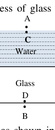
- (a) Observer A measures it as 12.0 cm
- (b) Observer B measures it as 12.0 cm
- (c) Observer C measures it as 16.0 cm
- (d) Observer D measures it as 18.0 cm
Topic: Geometric Optics Metodi: Snell’s Law Competenze: Physical Reasoning Objects: — Fonte: Testo (PDF) — p.12 Soluzione: Soluzioni (PDF)
Una colonna omogenea di acqua di altezza di 8,0 cm riempie lo spazio sopra una lastra di vetro di 9,0 cm di spessore . Gli osservatori A e B sono in aria appena fuori dall’alto e dal basso, mentre gli osservatori C e D sono all’interno appena sotto l’alto e sopra il basso. Lo spessore totale di vetro più acqua osservato da questi osservatori è
Quesito 59
- a) L’osservatore A lo misura come 12,0 cm
- b) L’osservatore B lo misura come 12,0 cm
- c) L’osservatore C lo misura a 16,0 cm
- d) L’osservatore D lo misura a 18,0 cm
Topic: Geometric Optics Metodi: Snell’s Law Competenze: Physical Reasoning Objects: — Fonte: Testo (PDF) — p.12 Soluzione: Soluzioni (PDF)
Several resistances of and are used to form a typical electric network as shown in the figure below. A DC supply of emf 18 V and negligible internal resistance has been connected between points A and B. Choose the correct option(s).
Quesito 60
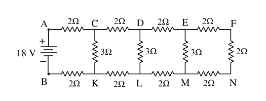
- (a) Total resistance between A and B is
- (b) The power consumed in the network is 60 W
- (c) The current through resistance of on the branch AC is 3 A
- (d) The current through resistance of in the branch CK is 2 A
Topic: Circuits Metodi: Equivalent Circuit Reduction, Kirchhoff’s Laws Competenze: Mathematical Modeling Objects: Resistor, Battery Fonte: Testo (PDF) — p.12 Soluzione: Soluzioni (PDF)
Per formare una rete elettrica tipica sono utilizzate diverse resistenze di e come mostrato nella figura seguente. Tra i punti A e B è stata collegata una corrente corrente di emf 18 V e una resistenza interna trascurabile. Scegliere l’opzione corretta (s).
Quesito 60
- (a) La resistenza totale tra A e B è
- b) La potenza consumata nella rete è di 60 W
- (c) La corrente attraverso la resistenza di sul ramo AC è di 3 A
- (d) La corrente attraverso la resistenza di nel ramo CK è di 2 A
Topic: Circuits Metodi: Equivalent Circuit Reduction, Kirchhoff’s Laws Competenze: Mathematical Modeling Objects: Resistor, Battery Fonte: Testo (PDF) — p.12 Soluzione: Soluzioni (PDF)